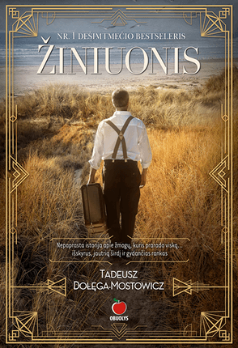

Naujos knygos | Patogupirkti.lt | Patogupirkti.lt
 0 Prisijungti Akcijos KNYGŲ IŠPARDAVIMAS Rask savąjį laimikį! Nuolaidos nuo -40% rinktinėms knygoms! DIDŽIOJI KNYGŲ IŠPARDUOTUVĖ Meilės romanai, detektyvai, trileriai, fantastika iki 5€ Visos knygos iki 1 euro DIDYSIS KNYGŲ VAIKAMS IŠPARDAVIMAS DOVANŲ KUPONAI KNYGŲ KOMPLEKTAI Visos knygos iki 2 eurų Grožinė literatūra iki 2 eurų Knygos vaikams iki 2 eurų Dalykinė literatūra iki 2 eurų REKOMENDUOJAMOS NAUJOS KNYGOS REKOMENDUOJAMOS NAUJOS KNYGOS VAIKAMS IR PAAUGLIAMS Visos knygos iki 5 eurų Dalykinė literatūra iki 5 eurų Grožinė literatūra iki 5 eurų Knygos vaikams iki 5 eurų TOP pasiūlymas! Perkantiems daugiau kaip už 30€ - galimybė išsirinkti dovaną! Bestseleriai: perkamiausios knygos DOVANŲ IDĖJOS Nobelio laureatų ir literatūros klasikos knygos Knygos iki 3€ Šimtai knygų už PUSĘ KAINOS! Leidyklos „Liūtai ne avys" knygos -40% pigiau Leidyklos „Luceo" knygos nuo -40% pigiau! Leidyklos „Dvi tylos" knygos nuo -40% pigiau! Gal mums pakeliui? Atrask savo knygą ir pasinaudok nuolaidomis! Knygos visiems skoniams nuo -40% pigiau! Geriausias Helovyno vakarėlis... namuose su detektyvu! Teminiai išpardavimai Lietuvių literatūros IŠPARDAVIMAS Mokomųjų knygų studentams IŠPARDAVIMAS Užsienio literatūros IŠPARDAVIMAS Knygų 3-5 metų vaikams IŠPARDAVIMAS Knygų 6-8 metų vaikams IŠPARDAVIMAS Knygų paaugliams ir jaunimui IŠPARDAVIMAS Istorijos knygų IŠPARDAVIMAS Knygų apie šeimą, vaikus, moters pasaulį IŠPARDAVIMAS Knygų apie protą, kūną ir dvasią IŠPARDAVIMAS Biografijų ir memuarų IŠPARDAVIMAS Verslo ir finansų knygų IŠPARDAVIMAS Meno, architektūros ir literatūros mokslo knygų IŠPARDAVIMAS Religijos knygų ir dvasinių skaitinių IŠPARDAVIMAS Visuomenės, politikos ir filosofijos knygų IŠPARDAVIMAS Fantastikos knygų IŠPARDAVIMAS Namų, sodo ir žemės ūkio knygų IŠPARDAVIMAS Detektyvų ir trilerių IŠPARDAVIMAS Knygų 0-2 metų vaikams IŠPARDAVIMAS Knygų apie sveikatą IŠPARDAVIMAS Kelionių, laisvalaikio ir sporto knygų IŠPARDAVIMAS Enciklopedijų ir žinynų IŠPARDAVIMAS Medicinos ir psichologijos knygų IŠPARDAVIMAS Knygų apie madą, muzika, teatrą ir kiną IŠPARDAVIMAS Knygų apie mokslo populiarinimą ir gamtą IŠPARDAVIMAS Knygų 9-12 metų vaikams IŠPARDAVIMAS Meilės ir erotinių romanų IŠPARDAVIMAS Knygų apie maistą ir gėrimus IŠPARDAVIMAS Visos kategorijos KNYGŲ IŠPARDAVIMAS Dalykinė literatūra Albumai Albumų IŠPARDAVIMAS Albumai apie Lietuvą Albumai "Welcome to Lietuva" Albumai apie Lietuvą anglų kalba Albumai apie Lietuvą kitomis kalbomis Meno albumai Biografijos. Atsiminimai Biografijų ir memuarų IŠPARDAVIMAS Asmenybės Karo atsiminimai. Tremtis. Partizanai. Holokaustas Kultūra, filosofija Kinas, teatras Mada, sportas Mokslas Muzika, menas, architektūra Literatūra Religija, teologija Visuomenė, politika Kitos biografijos ir atsiminimai Enciklopedijos. Žinynai Enciklopedijų ir žinynų IŠPARDAVIMAS Enciklopedijos Visuotinės lietuvių enciklopedijos Žinynai Etnografija. Tautosaka. Mitologija Knygų apie tautosaką, mitologiją ir etnografiją IŠPARDAVIMAS Etnografija Lietuvių kalbos tarmės ir šnektos Mitologija Tautosaka Istorija Istorijos knygų IŠPARDAVIMAS II-asis pasaulinis karas Archeologija Europos šalių istorija Dokumentai Istorija ir visuomenė Istoriografija Kitų šalių ir regionų istorija LDK istorija (XIII a. - 1795 m.) Lietuvos istorija Miestų ir kraštų istorija Serija "Lietuvos valsčiai" Tautų istorija Kalbų mokymasis Knygų ir CD kalbų mokymuisi IŠPARDAVIMAS Anglų kalba ir gramatika Italų kalba ir gramatika Ispanų kalba ir gramatika Lietuvių kalba ir gramatika Lotynų kalba ir gramatika Prancūzų kalba ir gramatika Norvegų kalba ir gramatika Rusų kalba ir gramatika Švedų kalba ir gramatika Vokiečių kalba ir gramatika Kitos kalbos, jų gramatika Kelionės. Laisvalaikis. Sportas Kelionių, laisvalaikio ir sporto knygų IŠPARDAVIMAS Atlasai ir žemėlapiai Kelionių įspūdžiai Kelionių vadovai po Lietuvą Kelionių vadovai po užsienio šalis Laisvalaikis Spalvinimo knygos suaugusiems Sportas Kompiuterija Kompiuterijos knygų IŠPARDAVIMAS Internetas, tinklalapiai Kompiuteriai Microsoft Office: Word, Excel ir kitos Microsoft Windows Programavimas: C++, Turbo Paskalis... Vaizdai, grafika, animacija Kitos kompiuterijos knygos Mada. Muzika. Scena. Ekranas Knygų apie madą, muzika, teatrą ir kiną IŠPARDAVIMAS Kinas, televizija, radijas Mada Muzika, teatras, šokis Maistas ir gėrimai Knygų apie maistą ir gėrimus IŠPARDAVIMAS Kokteiliai ir gėrimai Receptų knygos Medicina ir psichologija Medicinos ir psichologijos knygų IŠPARDAVIMAS Anatomija Bendroji medicinos praktika Endokrinologija Farmacija. Farmakologija Kardiologija Neurologija Onkologija Pediatrija Psichologija, psichiatrija Slauga, kineziterapija, reabilitacija Urogenitalinė sistema Veterinarija Kitos medicinos knygos Menas. Architektūra. Literatūros ir kalbos mokslas Meno, architektūros ir literatūros mokslo knygų IŠPARDAVIMAS Architektūra Dailė, skulptūra, dekoratyvus menas Fotografija Literatūros ir kalbos mokslas Meno kritika, meno istorija Mokomoji literatūra studentams Mokomųjų knygų studentams IŠPARDAVIMAS Aplinkos inžinerija ir kraštotvarka Apranga. Siuvimas. Mezgimas Apskaita Biologija. Chemija Edukologija. Pedagogika. Andragogika Elektros ir elektronikos inžinerija Energetika ir termoinžinerija Ergonomika. Civilinė sauga Filosofija. Logika Finansai ir investicijos Fizika. Astronomija Geografija. Geologija Informatika. Kompiuterija Inžinerinė grafika Komunikacija. Žiniasklaida Kūno kultūra. Choreografija Lietuvių kalba ir literatūra Maisto technologija Marketingas. Rinkodara Matematika. Statistika Mechanika. Mašinos Medicina Muzika. Vizualusis menas Psichologija. Psichiatrija Sociologija. Socialinis darbas Statyba. Architektūra Tarptautiniai santykiai. Politika Transporto inžinerija Turizmas. Viešbučių administravimas Užsienio kalbos Vadyba ir administravimas. Logistika Verslas. Ekonomika Kitos studijos Finansai ir investicijos Mokslo populiarinimas. Gamta Knygų apie mokslo populiarinimą ir gamtą IŠPARDAVIMAS Gamta Mokslo populiarinimo knygos Namų, sodo ir žemės ūkis Namų, sodo ir žemės ūkio knygų IŠPARDAVIMAS Naminiai gyvūnai Namų statyba, įrengimas, priežiūra ir dizainas Rankdarbių ir mezgimo knygos Sodininkystė, daržininkystė, augalininkystė Žemės ūkis Natos, dainynai ir muzikos DVD Natų ir dainynų IŠPARDAVIMAS Dainelės su natomis vaikams Natos ir dainynai Protas, kūnas ir dvasia Knygų apie protą, kūną ir dvasią IŠPARDAVIMAS Astrologija ir ezoterika Bendravimo menas, kūno kalba Burtai. Kortos. Sapnai. Numerologija. Chiromantija Saviugda Gyvenimas Anapus. Reinkarnacija Meditacija, hipnozė, joga Minčių ir aforizmų knygos Nerimo, streso ir pykčio valdymas Populiarioji psichologija Protas, intelektas, atmintis Rytų išmintis Sėkmės istorijos Religija ir teologija Religijos knygų ir dvasinių skaitinių IŠPARDAVIMAS Biblija arba Šventasis Raštas Dvasiniai skaitiniai Krikščionybė Kitos religijos Malda Religijos studijos Serija - Siekiantiems begalybės Šventieji ir jų gyvenimai Sveikata Knygų apie sveikatą IŠPARDAVIMAS Dietos. Kaip numesti svorio Mūsų kūnas. Mankšta. Masažas Pagalba sau. Gydomės namuose Sveika gyvensena Sveika mityba Serija "Sveikatos receptai" Vaistiniai augalai Kitos knygos apie sveikatą Šeima. Vaikai. Moters pasaulis Knygų apie šeimą, vaikus, moters pasaulį IŠPARDAVIMAS Knygos apie seksą Knygos moterims Lyčių tarpusavio santykiai Nėštumas, gimdymas ir kūdikio priežiūra Vaikų ugdymas ir auklėjimas Teisė Teisės knygų IŠPARDAVIMAS Administracinė teisė Baudžiamoji ir bausmių vykdymo teisė Civilinė teisė Darbo teisė Konstitucinė teisė Konstitucinė jurisprudencija Tarptautinė ir Europos Sąjungos teisė Teisiniai žodynai Kita teisinė literatūra Verslas. Finansai Verslo ir finansų knygų IŠPARDAVIMAS Apskaita Asmeniniai finansai Gamyba Lyderystė Logistika Marketingas Pardavimai Vadybos knygos Vadybinės minties kristalai: ESMĖ Viešasis sektorius Kitos verslo knygos Visuomenė. Politika. Kultūra. Filosofija Visuomenės, politikos ir filosofijos knygų IŠPARDAVIMAS Filosofija Kultūra Politika Visuomenė Žodynai Žodynų IŠPARDAVIMAS Anglų kalbos žodynai Italų kalbos žodynai Ispanų kalbos žodynai Lietuvių kalbos žodynai Prancūzų kalbos žodynai Rusų kalbos žodynai Vokiečių kalbos žodynai Kitų užsienio kalbų žodynai Specializuoti žodynai Grožinė literatūra Detektyvai. Trileriai. Siaubo romanai Detektyvų ir trilerių IŠPARDAVIMAS Klasikiniai detektyvai ir trileriai Rusų detektyvai ir trileriai Skandinavų detektyvai ir trileriai Šiuolaikiniai detektyvai ir trileriai Fantastika Fantastikos knygų IŠPARDAVIMAS Maginė fantastika Mokslinė fantastika Lietuvių literatūra Lietuvių literatūros IŠPARDAVIMAS Eilėraščiai ir dramos Klasikinė lietuvių literatūra Šiuolaikinė lietuvių literatūra Tikros istorijos Audioknygos Meilės ir erotiniai romanai Meilės ir erotinių romanų IŠPARDAVIMAS Erotiniai romanai Klasikiniai užsienio autoriai Lietuvių autoriai Magiškos meilės istorijos Serija "Svajonių romanai" Šiuolaikiniai užsienio autoriai Užsienio literatūra Užsienio literatūros IŠPARDAVIMAS Nuotykių ir istoriniai romanai Eilėraščiai ir dramos Eseistika ir publicistika Klasikinė užsienio literatūra Šiuolaikinė užsienio literatūra Tikros istorijos Knygos vaikams 0-2 metų vaikams Knygų 0-2 metų vaikams IŠPARDAVIMAS Kartoninės knygutės Knygos-žaislai Knygutės su garsais Lytėjimo knygutės Užduočių knygelės 3-5 metų vaikams Knygų 3-5 metų vaikams IŠPARDAVIMAS Dainų knygelės su natomis Eilėraščiai 3-5 metų vaikams Kartoninės knygutės Knygos apie Kakę Makę Knygos-žaislai Knygutės apie Kalėdas Knygos su garsais Lipdukų ir spalvinimo knygos Pasakos Skaitome kartu su vaiku Užduočių knygelės 6-8 metų vaikams Knygų 6-8 metų vaikams IŠPARDAVIMAS Dainų knygelės su natomis Eilėraščiai 6-8 metų vaikams Grožinė lietuvių autorių literatūra Grožinė užsienio autorių literatūra Mokomojo ir ugdomojo pobūdžio knygos Knygos apie Džeronimą Stiltoną Komiksai Pasakos Pažintinė ir informacinė literatūra Religija ir tikyba vaikams Sakmės, padavimai, liaudies kūryba Užduočių, galvosūkių, lipdukų ir spalvinimo knygos Kitos knygos Paaugliams ir jaunimui Knygų paaugliams ir jaunimui IŠPARDAVIMAS Detektyvai, trileriai Fantastika, fantasy Klasikinė literatūra Knygos mergaitėms ir merginoms Pažintinė ir informacinė literatūra Kitos knygos paaugliams ir jaunimui Vadovėliai ir leidiniai mokyklai Serija "Mažos didelės knygos" Serija "Mokyklos biblioteka" Lietuvių kalba ir literatūra 4-6 kl. Lietuvių kalba ir literatūra 7-9 kl. Lietuvių kalba ir literatūra 10-12 kl. Kiti vadovėliai, pagalbiniai leidiniai 10-12 kl. Medžiaga mokytojams 1-4 kl. Kiti vadovėliai ir pagalbiniai leidiniai Vadovėliai, pagalbiniai leidiniai 1-3 kl. Kiti vadovėliai, pagalbiniai leidiniai 4-6 kl. Užsienio kalbos 7-9 kl. Kiti vadovėliai, pagalbiniai leidiniai 7-9 kl. Užsienio kalbos 10-12 kl. Egzaminams Medžiaga mokytojams 5-8 kl. Medžiaga mokytojams 9-12 kl. Ikimokyklinukams Kitos knygos mokytojams Serija "Mokinio skaitiniai" ir "Literatūros skaitiniai" Vadovėlių ir leidinių mokyklai IŠPARDAVIMAS Kalendoriai. Užrašinės Kalendoriai Užrašų knygelės Dėlionės. Žaidimai Dėlionės 1-3 metų vaikams 4-6 metų vaikams nuo 7 iki 99 metų Žaidimai 1-3 metų vaikams 4-6 metų vaikams nuo 7 iki 99 metų CD, DVD CD, DVD vaikams Filmai vaikams DVD Muzika vaikams CD Pasakos CD Informaciniai ir mokomieji CD Informacinių ir mokomųjų CD IŠPARDAVIMAS CD moksleiviams CD verslui Informaciniai CD Kalbų mokymosi CD Kompiuterinio raštingumo CD Žodynai CD Kiti CD Muzika Dainuojamoji poezija Folkloras Koncertai DVD Muzikos DVD Originalūs lietuvių kompozitorių kūriniai Pop ir Rock atlikėjo ar grupės albumas Pop ir Rock atlikėjų ar grupių albumas Audio knygos Kita muzika Vaidybiniai ir dokumentiniai filmai (DVD) Vaidybiniai filmai (DVD) Dokumentiniai filmai (DVD) Rusų kino klasika (DVD) KNYGŲ IŠPARDAVIMAS Rekomenduojamos naujos knygos Populiariausios knygos Visos serijos Visi autoriai Visos leidyklos Knygų blogas 0 Prekių krepšelis yra tuščias Nemokamaspristatymas
nuo 15 € * Prisijungti Visos kategorijos KNYGŲ IŠPARDAVIMAS Dalykinė literatūra Albumai Biografijos. Atsiminimai Enciklopedijos. Žinynai Etnografija. Tautosaka. Mitologija Istorija Kalbų mokymasis Kelionės. Laisvalaikis. Sportas Kompiuterija Mada. Muzika. Scena. Ekranas Maistas ir gėrimai Medicina ir psichologija Menas. Architektūra. Literatūros ir kalbos mokslas Mokomoji literatūra studentams Mokslo populiarinimas. Gamta Namų, sodo ir žemės ūkis Natos, dainynai ir muzikos DVD Protas, kūnas ir dvasia Religija ir teologija Sveikata Šeima. Vaikai. Moters pasaulis Teisė Verslas. Finansai Visuomenė. Politika. Kultūra. Filosofija Žodynai Grožinė literatūra Detektyvai. Trileriai. Siaubo romanai Fantastika Lietuvių literatūra Meilės ir erotiniai romanai Užsienio literatūra Knygos vaikams 0-2 metų vaikams 3-5 metų vaikams 6-8 metų vaikams 9-12 metų vaikams Paaugliams ir jaunimui Vadovėliai ir leidiniai mokyklai Kalendoriai. Užrašinės Kalendoriai Užrašų knygelės Dėlionės. Žaidimai Dėlionės Žaidimai CD, DVD CD, DVD vaikams Informaciniai ir mokomieji CD Muzika Vaidybiniai ir dokumentiniai filmai (DVD) Visos serijos Visi autoriai Visos leidyklos Akcijos KNYGŲ IŠPARDAVIMAS Rask savąjį laimikį! Nuolaidos nuo -40% rinktinėms knygoms! DIDŽIOJI KNYGŲ IŠPARDUOTUVĖ Meilės romanai, detektyvai, trileriai, fantastika iki 5€ Visos knygos iki 1 euro DIDYSIS KNYGŲ VAIKAMS IŠPARDAVIMAS DOVANŲ KUPONAI KNYGŲ KOMPLEKTAI Visos knygos iki 2 eurų Grožinė literatūra iki 2 eurų Knygos vaikams iki 2 eurų Dalykinė literatūra iki 2 eurų REKOMENDUOJAMOS NAUJOS KNYGOS REKOMENDUOJAMOS NAUJOS KNYGOS VAIKAMS IR PAAUGLIAMS Visos knygos iki 5 eurų Dalykinė literatūra iki 5 eurų Grožinė literatūra iki 5 eurų Knygos vaikams iki 5 eurų TOP pasiūlymas! Perkantiems daugiau kaip už 30€ - galimybė išsirinkti dovaną! Bestseleriai: perkamiausios knygos DOVANŲ IDĖJOS Nobelio laureatų ir literatūros klasikos knygos Knygos iki 3€ Šimtai knygų už PUSĘ KAINOS! Leidyklos „Liūtai ne avys" knygos -40% pigiau Leidyklos „Luceo" knygos nuo -40% pigiau! Leidyklos „Dvi tylos" knygos nuo -40% pigiau! Gal mums pakeliui? Atrask savo knygą ir pasinaudok nuolaidomis! Knygos visiems skoniams nuo -40% pigiau! Geriausias Helovyno vakarėlis... namuose su detektyvu! Teminiai išpardavimai Lietuvių literatūros IŠPARDAVIMAS Mokomųjų knygų studentams IŠPARDAVIMAS Užsienio literatūros IŠPARDAVIMAS Knygų 3-5 metų vaikams IŠPARDAVIMAS Knygų 6-8 metų vaikams IŠPARDAVIMAS Knygų paaugliams ir jaunimui IŠPARDAVIMAS Istorijos knygų IŠPARDAVIMAS Knygų apie šeimą, vaikus, moters pasaulį IŠPARDAVIMAS Knygų apie protą, kūną ir dvasią IŠPARDAVIMAS Biografijų ir memuarų IŠPARDAVIMAS Verslo ir finansų knygų IŠPARDAVIMAS Meno, architektūros ir literatūros mokslo knygų IŠPARDAVIMAS Religijos knygų ir dvasinių skaitinių IŠPARDAVIMAS Visuomenės, politikos ir filosofijos knygų IŠPARDAVIMAS Fantastikos knygų IŠPARDAVIMAS Namų, sodo ir žemės ūkio knygų IŠPARDAVIMAS Detektyvų ir trilerių IŠPARDAVIMAS Knygų 0-2 metų vaikams IŠPARDAVIMAS Knygų apie sveikatą IŠPARDAVIMAS Kelionių, laisvalaikio ir sporto knygų IŠPARDAVIMAS Enciklopedijų ir žinynų IŠPARDAVIMAS Medicinos ir psichologijos knygų IŠPARDAVIMAS Knygų apie madą, muzika, teatrą ir kiną IŠPARDAVIMAS Knygų apie mokslo populiarinimą ir gamtą IŠPARDAVIMAS Knygų 9-12 metų vaikams IŠPARDAVIMAS Meilės ir erotinių romanų IŠPARDAVIMAS Knygų apie maistą ir gėrimus IŠPARDAVIMAS Rekomenduojamos naujos knygos Populiariausios knygos Knygų blogas Pirmas REKOMENDUOJAMOS NAUJOS KNYGOS REKOMENDUOJAMOS NAUJOS KNYGOS Kaina Filtruoti pagal kainą iki 5 € 5 € - 10 € 10 € - 15 € 15 € - 20 € daugiau 20 €